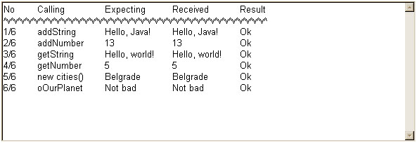

The applet below will test the basic LiveConnect functionality in your JRE installation. Most of that was available in Java 1.1 some 12 years ago and is considered essential part of JRE. The test is an extended version of Sun's own LiveConnect test.
The picture below shows the output as it should appear when the JRE installation provides a LiveConnect support according to the specification. If your results differ you should seek a platform specific support which might be provided by the JRE developers for your platform.
